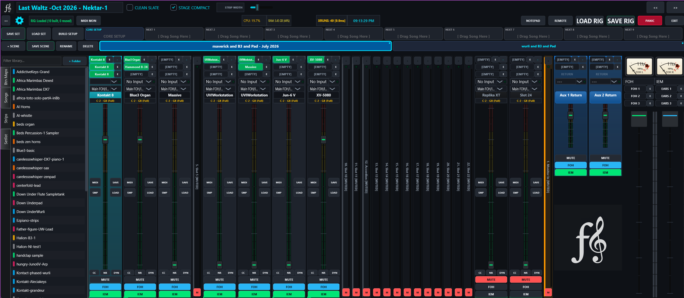
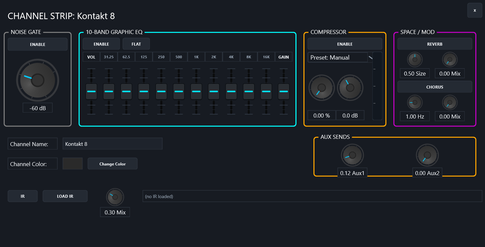
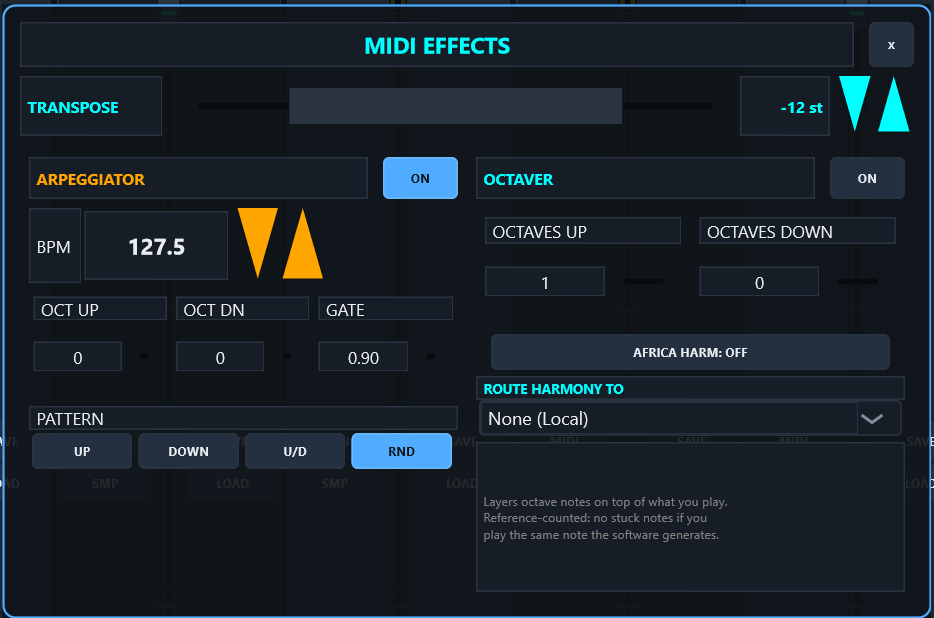
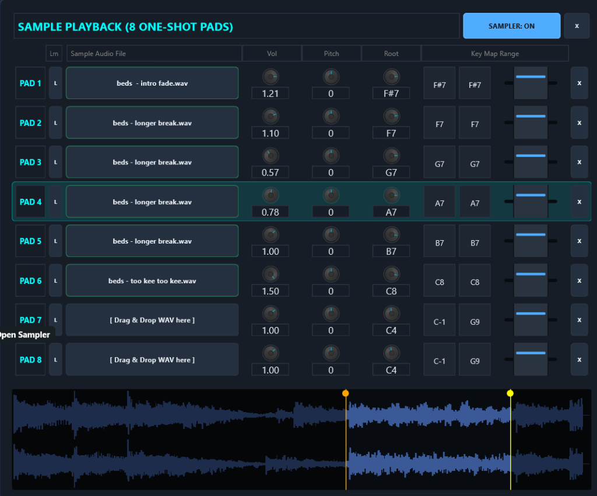
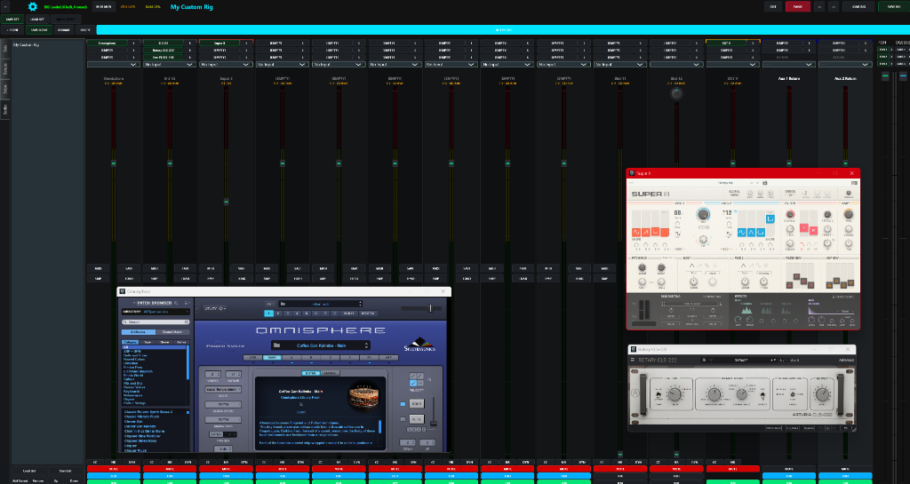
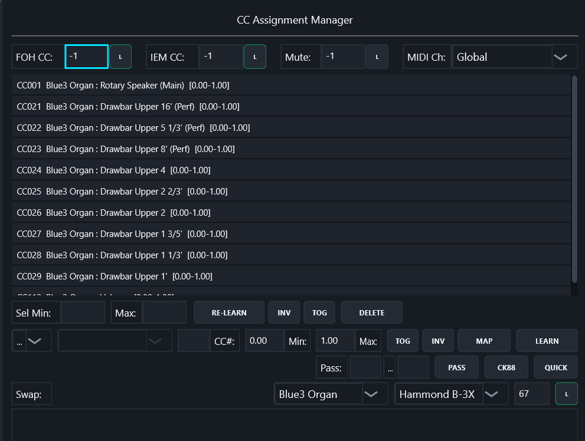
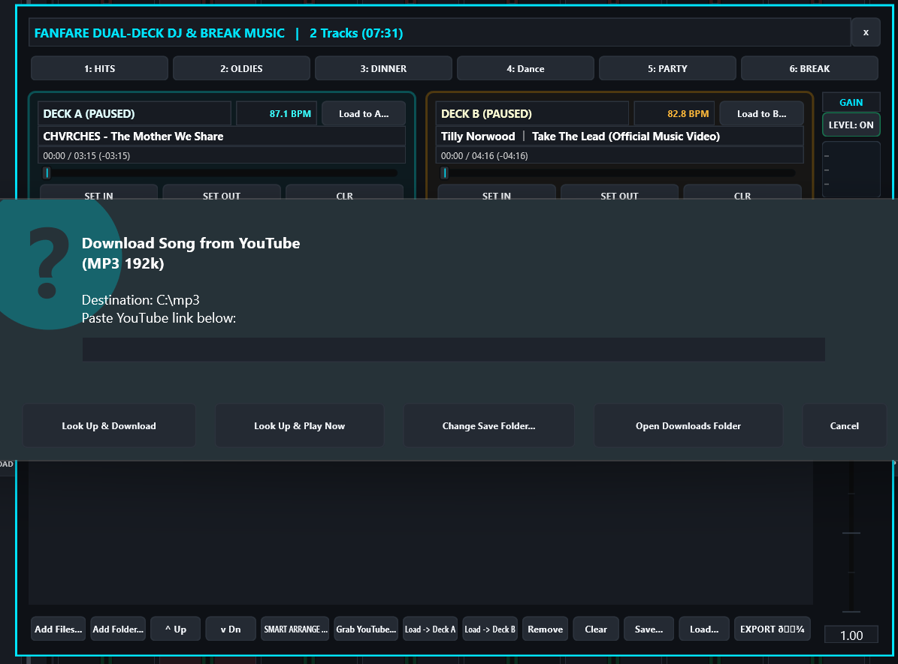

Fanfare makes your rig easy to set up and then stays out of your way on stage. You play music. You don't run an IT desk.
Splits, sample triggers, arpeggiators, octaves, harmonizers. Set them up once. While you play, the next song loads in the background, so when you call it, it's already there.
Separate master faders and VU meters for FOH (front of house) and IEM (in-ear monitors). Turn up your ears without touching what the room hears.
Features
Songs, Scenes & Setlists
Every song is a plain JSON file. Jump between sections with MIDI, and the next song loads while you play.
Channel Strip DSP & Musette
Gate, EQ, compressor, chorus, reverb, and convolution on every slot. Plus an accordion detuner with 2-reed MM, 3-reed MMM, and “TEMU Musette”, which is exactly as out of tune as it sounds.
Direct Outs
Send any slot straight to outputs 5 through 8, on top of the FOH and IEM mixes. Your vocal mic goes to the board on its own channel, and only where you send it.
Latch, Toggle & Swap
Turn any button into an on/off switch for a parameter or a mute, or flip between two loaded instruments. Swaps fade out and release every held note, so nothing hangs.
Fast, Safe Loading
Plugins load at the same time instead of one by one. The fussy ones, like Native Instruments, get handled the way they need. One bad plugin can't hold up the rest.
Long-Press Learn
Hold MUTE, FOH, or IEM on any strip and move a knob to map it. Or do it from the CC Assignment Manager.
Sampler & Waveform Editor
Drag in a WAV, trim it to the sample, set the root key, and shift octaves.
Break Music Player
Two decks, YouTube downloads, BPM display, and playlist arranging. Set break music lives in the same app as your rig.
Safe Saves
Every save writes to a temp file first and keeps a backup. Pull the plug mid-save and your setlist is still fine.
Your Files
No cloud, no account, no telemetry. Your patches are text files you can open, copy, and back up however you want.
Screenshots







Full live mixer interface with setlist manager, dual FOH/IEM mixes, and peak VU metering. Click an image to expand.